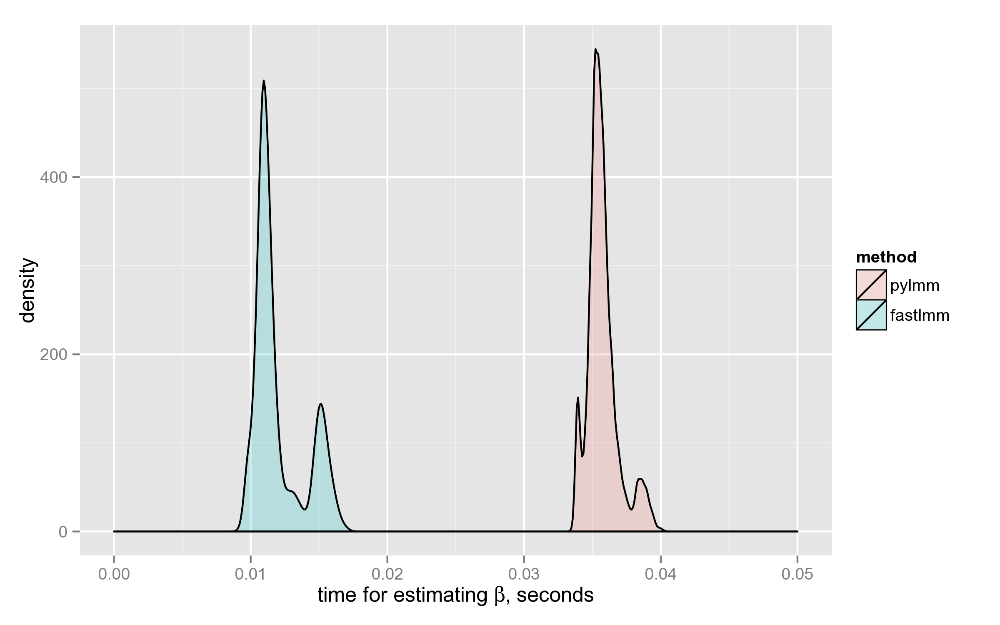
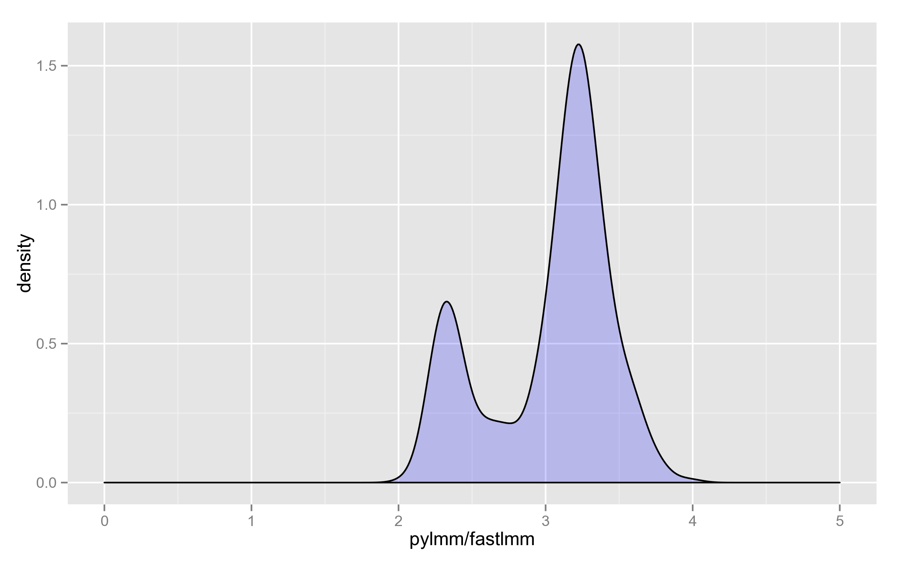
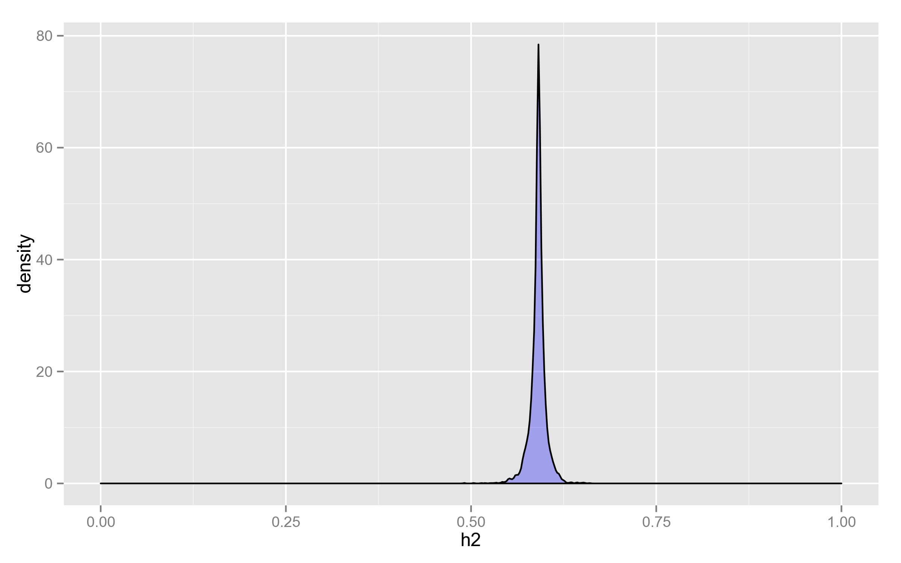
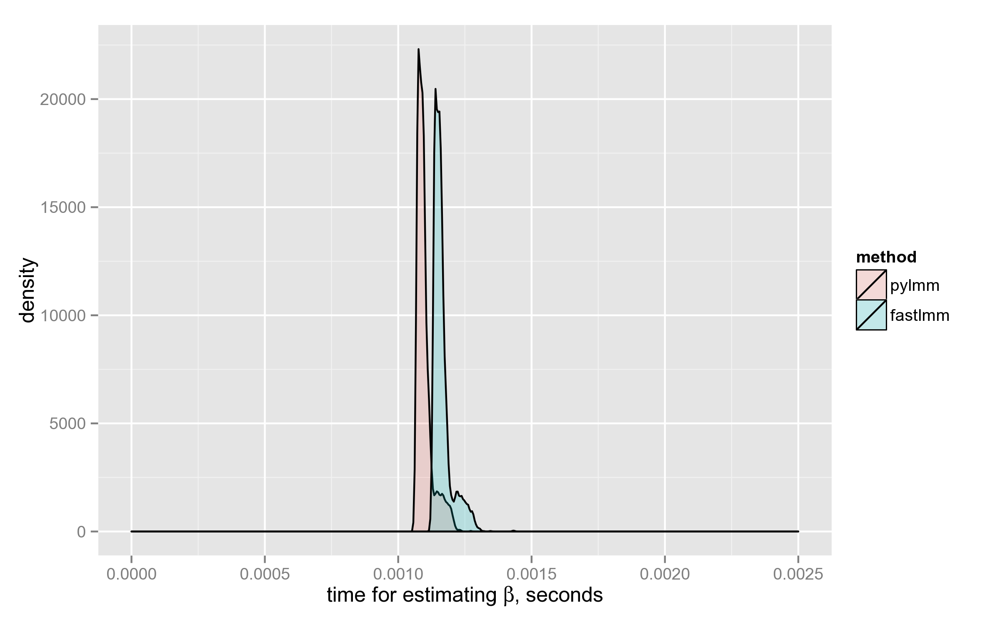

IN SHORT: FaST-LMM computes $\hat{\beta}$ (with precomputed $K$ and its eigendecomposition) 3x faster on average than PyLMM.
HOWEVER: with fixed mixing coefficient PyLMM computes log-likelihood slightly faster than FaST-LMM
It turns out that, at least with REML parameter set to True, the functionality of fastlmm/inference/lmm.py and pylmm/lmm.py is almost identical. It is therefore interesting to compare the performance of the two implementations.
Loading SNPs and kinship matrix
I found PyLMM code for loading these things a bit simpler to use, and copy-pasted a few lines from pylmmGWAS.py.
For testing, I took some synthetic SNPs from tests/ directory of FaST-LMM and ran the two tools on them. The dataset consists of 500 individuals and 4000 SNPs.
from pylmm import input
import numpy as np
bfile = "/home/lomereiter/github/FaST-LMM/tests/datasets/synth/allButChr1"
pheno = "/home/lomereiter/github/FaST-LMM/tests/datasets/synth/pheno_10_causals.txt"
kfile = "/home/lomereiter/github/pylmm/synth_all.kin" # computed by pylmmKinship.py
IN = input.plink(bfile,type='b', phenoFile=pheno,normGenotype=True)
Y = IN.phenos[:,0]
K = np.fromfile(open(kfile,'r'),sep=" ")
K.resize((len(IN.indivs),len(IN.indivs)))
Preparing LMM (aka eigendecomposition of $ K $)
Each took roughly 0.3 seconds on my laptop. Both tools use scipy.linalg.eigh under the hood.
PyLMM
import pylmm.lmm as py
def preparePyLMM(y, K):
return py.LMM(y, K)
FaST-LMM
import fastlmm.inference.lmm as fast
def prepareFastLMM(y, K):
lmm = fast.LMM()
lmm.setK(K)
lmm.sety(y)
return lmm
Computing $\hat{\beta}$ given $X$ (covariates)
After LMM initialization, we loop over the SNPs:
for snp,id in IN:
x = snp.reshape((snp.shape[0], 1))
...
In the loop, x is the tested SNP, which is one column of the covariates matrix (the other is vector of ones).
PyLMM
Adds the column of ones automatically.
def computeBetaPyLMM(X, K, y, REML=True, lmm=None):
if lmm is None: lmm = preparePyLMM(y, K)
hmax, beta, sigma, L = lmm.fit(X=X, REML=REML)
return beta, sigma, hmax
FaST-LMM
A bit more of manual work is required, but the interface is still reasonably simple. For accurate measurements, I excluded the time spent in calls to np.ones and np.hstack.
def computeBetaFastLMM(X, K, y, REML=True, lmm=None):
if lmm is None: lmm = prepareFastLMM(y, K)
X0 = np.ones((K.shape[0],1))
X = np.hstack((X, X0))
lmm.setX(X)
h2 = lmm.findH2(REML=REML)
return h2['beta'], h2['sigma2'], h2['h2']
The loop
Here’s the complete loop, where I added a simple decorator timeit that measures the time spent in the function.
for snp,id in IN:
x = snp.reshape((snp.shape[0], 1))
beta, var, mix, t = timeit(computeBetaPyLMM)(x, K, Y, REML=True, lmm=lmm_py)
beta2, var2, mix2, t2 = timeit(computeBetaFastLMM)(x, K, Y, REML=True, lmm=lmm_fast)
I also included checks that the results are indeed the same, and printed the times into a file:
#####################################################
assert(np.abs(beta[1][0] - beta2[0]) < 1e-5)
assert(np.abs(var[0][0] - var2) < 1e-5)
assert(np.abs(mix - mix2) < 1e-5)
print("{0}\t{1}".format(t, t2))
The results
FaST-LMM has computed $\hat{\beta}$ on average 3x faster than PyLMM. Below is the density plot: the distributions don’t even intersect.
Both distributions are multimodal for some reason, the time depends on the $X$ matrix in a complicated way.

Finally, here’s the distribution of the ratio on the 4000 SNPs (why it’s bimodal, I have no idea):

Computations with fixed mixing coefficient
In the above discussion, most of the time is spent on finding optimal h2 value. The reasonable questions to ask are:
- Does it change a lot?
- How do the tools perform when the parameter is fixed?
Distribution of h2
As can be seen, it doesn’t change that much, considering that its range is potentially the whole $(0, 1)$.
It’s therefore justified to use the same value for all calculations, optimized for the null model ($X = \mathbf{1}_n$) — even if there is a loss in statistical power, it doesn’t overweigh the 10x speedup.

Surprisingly, PyLMM computes log-likelihood a little faster than FaST-LMM:

Some of the choices made by FaST-LMM developers, are debatable. For example, here they could use NP.slogdet(XX) instead of taking the decomposition (neither eigenvalues nor eigenvectors are used later in the code):
XX = self.X.T.dot(self.X)
[Sxx,Uxx]= LA.eigh(XX)
logdetXX = SP.log(Sxx).sum()
Another debatable choice is taking eigendecomposition of XKX where its (generalized) inverse is needed.
PyLMM is faster here at the expense of ignoring degenerate cases. It simply takes linalg.inv which internally uses a (pivoted) LU-decomposition. Given that it didn’t fail on the test dataset, it makes me think that it’s more reasonable to use SVD- or eigendecomposition only as a fallback, when LU indicates that the matrix is singular.
UPD (11.03.2015): even better option is to use Cholesky decomposition, since the matrix is positive (semi?)definite. I checked, and when used instead of linalg.inv, that cuts off 10% of pylmm.lmm.LMM.LL running time.